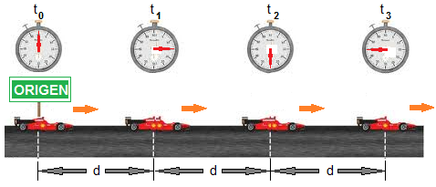

En física, un movimiento es rectilíneo uniforme cuando un «objeto» viaja en una trayectoria recta a una velocidad constante, dado que su aceleración es nula.El movimiento rectilíneo uniforme se designa frecuentemente con el acrónimo MRU, aunque en algunos países es MRC, por movimiento rectilíneo constante.
El movimiento rectilíneo uniforme (m.r.u.), es aquel con velocidad constante y cuya trayectoria es una línea recta. Un ejemplo claro son las puertas correderas de un ascensor, generalmente se abren y cierran en línea recta y siempre a la misma velocidad.
Estás arreglando unos paneles solares averiados, cuando de pronto, al presionar, tu destornillador sale disparado de tus manos. Si no lo atrapas a tiempo, el destornillador estará viajando por el espacio en línea recta y a velocidad constante, a menos que algo se interponga en su camino. Esto sucede porque la herramienta se mueve con movimiento rectilíneo uniforme, o MRU.